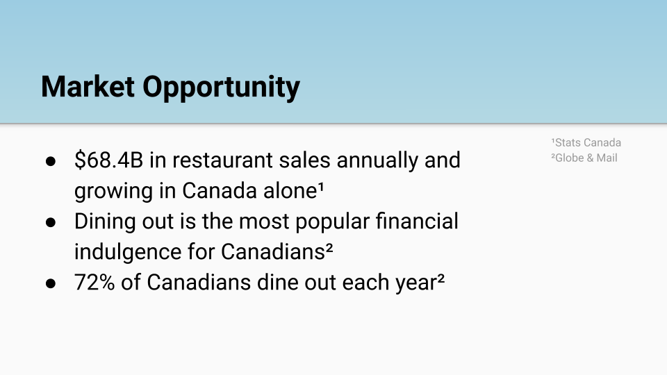

Palate
Venture Type: Consumer
The Problem:
According to a survey conducted by OpenTable, “56% of consumers said they were ‘very unlikely’ or ‘unlikely’ to download an app for an individual restaurant” (Jennings, 2015). In fact, survey respondents indicated preference towards apps that collect various pieces of information from multiple restaurants (Jennings, 2015). The current landscape of the restaurant industry presents users with multiple digital applications and websites to use when choosing where to eat. The problem is that many restaurant discovery applications do not integrate with third-party services in a way that maximizes efficiencies for the end user. As a result, there is a need for a single app that will enable users to complete all necessary tasks. A proposed solution is an app called Palate.
Target User:
• Millennial restaurant-goers (anyone born between 1981 and 1996)The Solution:
Palate is a restaurant-discovery 'super-app' that enables users to do everything from searching, to viewing crowd-sourced photos from Instagram, to placing a reservation regardless of what third-party service the restaurant integrates with.
Key Features:
• Search based by location
• View high-quality, crowd-sourced images pulled from Instagram
• View up-to-date, aggregated reviews
• View menu items
• Save a restaurant for later viewing
• Place a reservation
• See what's trending in your area
Future Opportunities:
• Ability to use context-aware technology to recommend restaurants to users based on time of day, location, calendar items, & more
My Role
Palate was my major research project in partial fulfillment of Ryerson's Master in Digital Media degree; however, it is now my own start-up venture.
My role continues to involve researching, strategizing, designing, and developing the product roadmap for Palate. Furthermore, since an interactive MVP has been designed, I have able to conduct user research and customer interviews to gain insights and determine the product's competitive advantage within the start-up ecosystem.
Slide from Pitch Deck
References:
Digital demands: restaurants seek new ways to meet consumers' high expectations for mobile features in Nation's Restaurant News. 10/12/2015, Vol. 49 Issue 15, p22-27. 4p. by Lisa Jennings
- Adobe XD
- Adobe Photoshop
- InVision